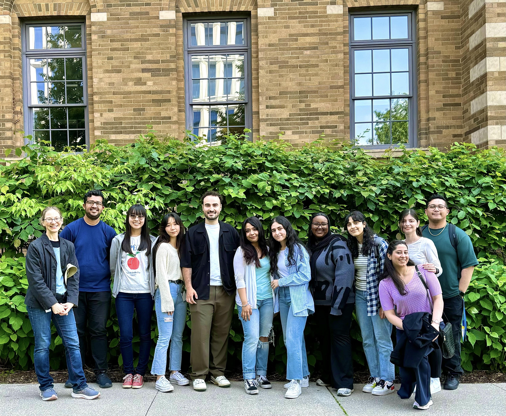
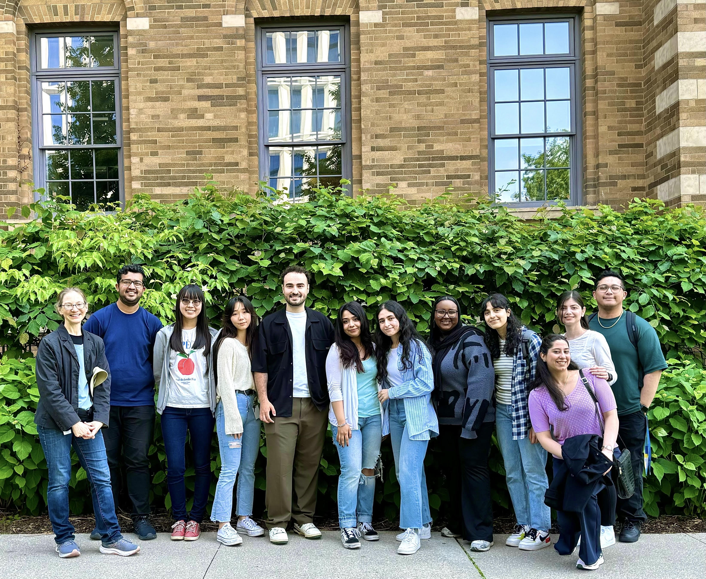

Lab photos
Here are some photos of the different labs contributing to the Boron project.
The Sabatinos Lab enjoying time outside the lab.

Here are some photos of the different labs contributing to the Boron project.
The Sabatinos Lab enjoying time outside the lab.
Here is a photo gallery of the scientist's pet friends

Old man River